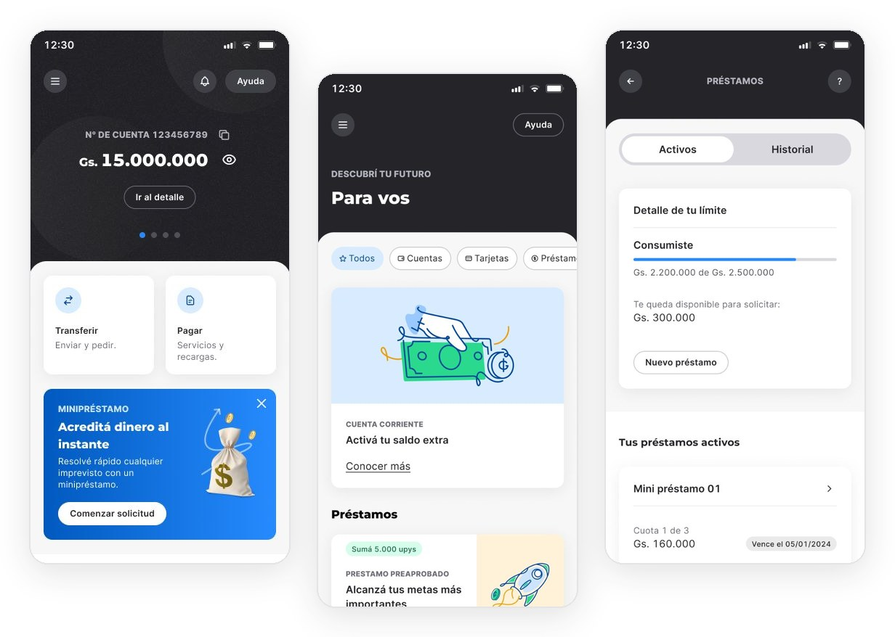
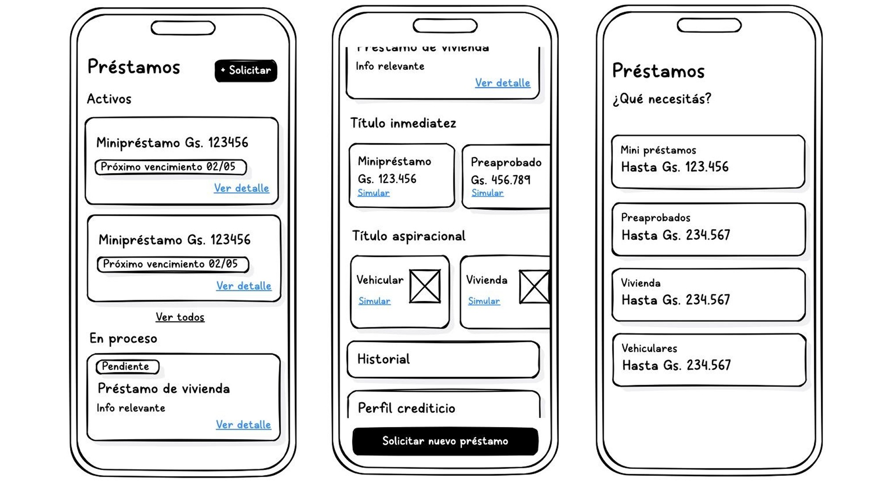
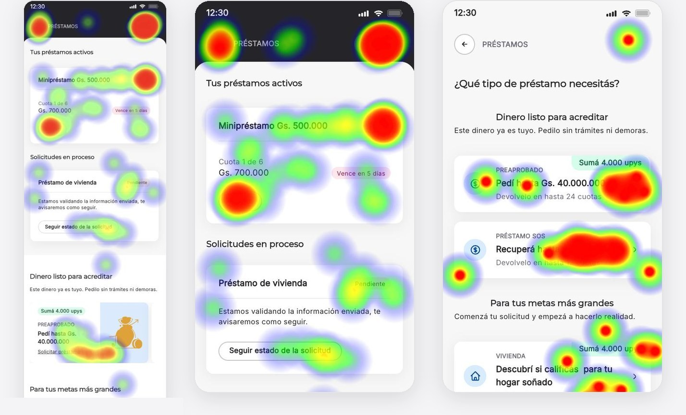
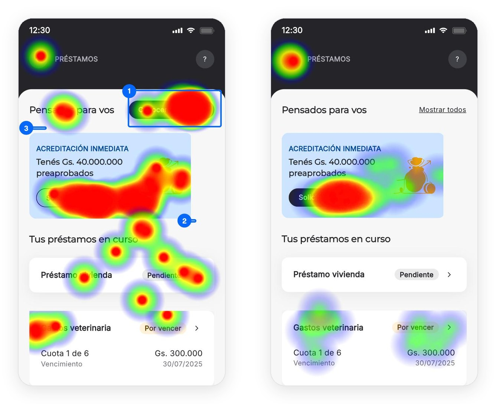
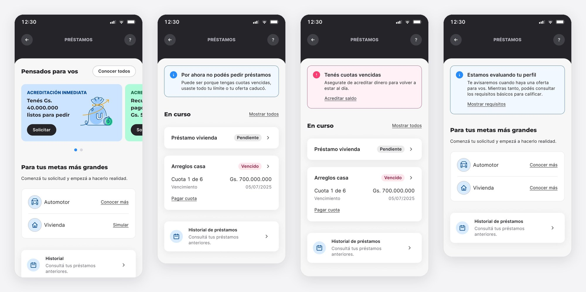

Case study · 2025
Loans homeHome de
préstamos
About the projectSobre el proyecto
Design of the new loans home in the ueno bank app: a single place to request, track and pay loans, bringing together instant consumer loans and assisted loans for bigger projects. A proactive initiative, born from design.
Diseño de la nueva home de préstamos de la app de ueno bank: un único lugar para pedir, seguir y pagar préstamos, que reúne los préstamos de consumo al instante y los asistidos para proyectos más grandes. Una iniciativa proactiva, que nació desde diseño.
Loans scattered all over the appPréstamos repartidos por toda la app
The bank’s app had no centralised space for managing loans. Offers were shown on the main screen, while active loans and history were spread across different sections, creating a fragmented experience.
La app del banco no contaba con un espacio centralizado para la gestión de préstamos. Las ofertas se mostraban en la pantalla principal, mientras que los préstamos activos y el historial estaban distribuidos en distintas secciones, generando una experiencia fragmentada.
This fragmentation also came from the bank’s internal structure, where two teams worked independently: one on differential loans and the other on consumer loans.
Esta fragmentación también respondía a la estructura interna del banco, donde dos equipos trabajaban de manera independiente: uno sobre préstamos diferenciales y otro sobre préstamos de consumo.
Both teams drove an initiative to create a unified loans home, so users could check and manage all their products from one place.
Ambos equipos impulsamos una iniciativa para crear una home de préstamos unificada, que permitiera a las personas usuarias consultar y gestionar todos sus productos desde un mismo lugar.

→ The challenge: a home that balances what people already have with what they could request.El desafío: una home que equilibre lo que la persona ya tiene con lo que podría pedir.
01
The starting pointEl punto de partida
A dedicated home would let us centralise all the information, make decisions easier and improve usability.
We focused on three problems:
Una home específica nos permitiría centralizar toda la información, facilitar la toma de decisiones y mejorar la usabilidad.
Nos enfocamos en tres problemas:
Quick access to offersAcceso rápido a ofertas
Tracking active loansSeguimiento de la tenencia
Managing paymentsGestión de pagos
02
The proposalLa propuesta
We organised the home around two conceptual focuses, one for each moment of the relationship with a loan.
Organizamos la home alrededor de dos focos conceptuales, uno para cada momento de la relación con un préstamo.
Give people control to explore offers, compare options and decide when to request a loan.
Darle a cada persona el control para explorar ofertas, comparar opciones y decidir cuándo pedir un préstamo.
Offer + acquisition
Oferta + adquisición
Show the status of each loan: what is left to pay, when the next instalment is due and what needs to be done.
Mostrar los estados de los préstamos: cuánto falta, cuándo vence la próxima cuota y qué hay que hacer.
Active loans + ongoing operations + history + scoring
Tenencia + operaciones en curso + historial + scoring
From concept to wireframeDel concepto al wireframe
- A storefront and a catalogue: the home shows the most relevant offers, and the main CTA leads to a catalogue with every product.Una vidriera y un catálogo: la home muestra las ofertas más relevantes y el CTA principal lleva a un catálogo con todos los productos.
- Two kinds of loans, two promises: consumer loans “instant, for everyday life” and assisted loans “for projects”.Dos tipos de préstamo, dos promesas: los de consumo “al instante, para el día a día” y los asistidos “para proyectos”.
- An acquisition CTA that stays fixed after the first scroll.Un CTA de adquisición que queda fijo después del primer scroll.
- Ongoing loans with a “See all” that leads to the consolidated view and the due-date calendar.Préstamos en curso con un “Ver todos” que lleva al consolidado y a la agenda de vencimientos.

→ Once the low-fidelity proposal was defined, we went out to test it to check it was understood.Una vez definida la propuesta en baja fidelidad, salimos a testear para validar que se entendiera.
03
Test 1: content and acquisitionTesteo 1: contenido y adquisición
What we wanted to learnQué queríamos aprender
- How people would organise the section (card sorting).Cómo organizarían la sección las personas (card sorting).
- Which word to use to request a loan: request, simulate, ask for…Qué palabra usar para pedir un préstamo: solicitar, simular, pedir…
- Whether the acquisition button and the catalogue worked (interactive prototype).Si funcionaban el botón de adquisición y el catálogo (prototipo interactivo).
Who we tested withCon quiénes testeamos
Unmoderated tests with two bases of the app:
Testeos no moderados con dos bases de la app:
- People with a financial product who had received a loan offer.Personas con algún producto financiero que habían recibido una oferta de préstamo.
- People with active or recently paid-off loans.Personas con préstamos activos o cancelados hace poco.
61 people completed the prototype task.
61 personas completaron la tarea del prototipo.
What we foundLo que encontramos
completed the task of requesting a loan in the prototype.
completó la tarea de pedir un préstamo en el prototipo.
converted in fewer than 3 steps: they took longer than we wanted (86 s on average).
convirtió en menos de 3 pasos: tardaron más de lo deseado (86 s en promedio).
chose “Request loan” as the clearest button, ahead of “Simulate loan” (34%).
eligió “Solicitar préstamo” como el botón más claro, por delante de “Simular préstamo” (34%).
chose “Instant credit” to name loans ready to disburse.
eligió “Acreditación inmediata” para nombrar los préstamos listos para desembolsar.
People saw the “Request” button in the header and understood it was clickable. Banners also worked as an acquisition channel.
El botón “Solicitar” del header se vio y se entendió como clickeable. Los banners también funcionaron como canal de adquisición.
We feared “Request” would scare people, as if they were already taking the loan. Most expected a simulator with amount, rate and term.
Temíamos que “Solicitar” asustara, como si ya estuvieran sacando el préstamo. La mayoría esperaba un simulador con monto, tasa y plazo.
The fixed button was barely used, and the active loan card drew so much attention that many tapped it when asked to request a new loan.
El botón fijo casi no se usó, y la card del préstamo activo atrajo tanto que muchos la tocaron cuando les pedimos solicitar uno nuevo.

What we decidedQué decidimos
Active loans and acquisition, both in the first scroll.
Tenencia y adquisición, las dos en el primer scroll.
Reorganise the home with reading levels, using colour, images and different components.
Reorganizar la home con niveles de lectura, a través de color, imágenes y distintos componentes.
The CTA is called “Request loan” and consumer loans, “Instant credit”.
El CTA se llama “Solicitar préstamo” y los préstamos de consumo, “Acreditación inmediata”.
Prioritise offers ready to disburse over assisted loans.
Priorizar las ofertas listas para desembolso por sobre los préstamos asistidos.
04
Test 2: A/B and loan cardsTesteo 2: A/B y cards de préstamos
With the new version we ran a second round to validate how people request a loan, how they pay an instalment and how they read the status of their loans.
Con la nueva versión hicimos una segunda tanda para validar cómo se pide un préstamo, cómo se paga una cuota y cómo se lee el estado de los préstamos.
A/B: two ways into the catalogueA/B: dos formas de llegar al catálogo

84,6%
success · 44 s on average. 100% of those who entered the catalogue converted.
de éxito · 44 s en promedio. El 100% de quienes entraron al catálogo convirtió.
82,9%
success · 25 s on average. Nobody entered the catalogue: the tertiary button went unnoticed.
de éxito · 25 s en promedio. Nadie entró al catálogo: el botón terciario pasó desapercibido.
- In both versions the pre-approved banner was the main way in (51% in A and 74% in B).En las dos versiones el banner de preaprobado fue el acceso principal (51% en A y 74% en B).
- The choice depends on the goal: speed up acquisition or encourage exploring the catalogue.La elección depende del objetivo: acelerar la adquisición o fomentar la exploración del catálogo.
Loan cardsCards de préstamos
90,9% found the status of their housing application, and 81,8% went straight to the pending loan card. The “pending” tag is understood.
El 90,9% encontró el estado de su solicitud de vivienda, y el 81,8% fue directo a la card del préstamo pendiente. El tag “pendiente” se entiende.
Only 34,3% managed to pay an instalment. Most tapped the first visible loan and hardly used the carousel.
Solo el 34,3% logró pagar una cuota. La mayoría tocó el primer préstamo visible y casi no usó el carrusel.
Once inside the loan, 85,7% understood how to pay. The problem was getting there, not the payment screen.
Una vez dentro del préstamo, el 85,7% entendió cómo pagar. El problema era llegar, no la pantalla de pago.
What we decidedQué decidimos
Remove the carousel: two cards up front and a “Show all” when there are more.
Eliminar el carrusel: dos cards al frente y un “Mostrar todos” cuando hay más.
*Most ueno users have one or two active loans.
*La mayoría de las personas de ueno tiene uno o dos préstamos activos.
“Your ongoing loans” brings together active and pending loans.
“Tus préstamos en curso” reúne los préstamos activos y los pendientes.
The “Pay” button goes back on the loan card, visible from the home.
El botón “Pagar” vuelve a la card del préstamo, visible desde la home.
Banners stay as the main access to acquisition
Los banners quedan como acceso principal a la adquisición
*their CTA works as primary or secondary.
*su CTA funciona en primario o secundario.
05
The final homeLa home final
Every test result became a design decision.
The final home puts acquisition and active loans in the first scroll, with clear reading levels.
Cada resultado de los testeos se tradujo en una decisión de diseño.
La home final pone la adquisición y la tenencia en el primer scroll, con niveles de lectura claros.
- 01
Offers first.Primero, las ofertas. Pre-approved banners with the amount up front, as the main way to request a loan.Banners de preaprobados con el monto adelante, como acceso principal para solicitar un préstamo.
- 02
A catalogue to explore.Un catálogo para explorar. Every product with an offer, in a second level of navigation.Todos los productos con oferta, en un segundo nivel de navegación.
- 03
Ongoing loans, without a carousel.Préstamos en curso, sin carrusel. Credited and in-process loans together, with the “Pay” button on the card.Acreditados y en proceso juntos, con el botón “Pagar” en la card.
- 04
More than two? A separate section.¿Más de dos? Una sección aparte. Two cards up front and a “Show all” for the rest.Dos cards al frente y un “Mostrar todos” para el resto.
- 05
Loans for bigger goals.Préstamos para metas grandes. Assisted loans (housing, projects) in their own module.Los préstamos asistidos (vivienda, proyectos) en su propio módulo.
- 06
History always at hand.El historial siempre a mano. Access to finished loans at the end of the home.Acceso a los préstamos finalizados al final de la home.
One home for every situationUna home para cada situación
We designed it with a modular structure: the home changes depending on whether the person has an offer and whether they have active loans.
La diseñamos con una estructura modular: la home cambia según si la persona tiene una oferta y si tiene préstamos activos.
The focus is on acquiring consumer loans, and assisted loans stay available below.
El foco está en la adquisición de préstamos de consumo, y los asistidos siguen disponibles más abajo.
We explain why there is no offer (no offer yet, limit used up) and, if the person is in arrears, the focus is on settling the debt.
Explicamos por qué no hay oferta (todavía no tiene, consumió su límite) y, si está en mora, el foco pasa a que salde la deuda.
A help section with the requirements to qualify, plus access to assisted loans and history.
Una sección de ayuda con los requisitos para calificar, más el acceso a asistidos y al historial.

06
Learnings and next stepsAprendizajes y próximos pasos
Content learningsAprendizajes de contenido
Beyond the home, the tests left us principles for writing financial products that we now apply in other flows.
Más allá de la home, los testeos nos dejaron principios para escribir productos financieros que hoy aplicamos en otros flujos.
“Ask for a loan” works when there is context, but can be intimidating at an early stage with no explanation.
“Pedir préstamo” funciona si hay contexto, pero intimida en una etapa inicial sin explicación.
Messages that lead with the benefit (money, immediacy) catch more attention than neutral ones like “You have an offer available”.
Los mensajes que ponen adelante el beneficio (dinero, inmediatez) captan más que los neutros como “Tenés una oferta disponible”.
Words like “pre-approved” or “available line” seem obvious to us, but not always to people.
Palabras como “preaprobado” o “línea disponible” parecen evidentes para nosotros, pero no siempre lo son para las personas.
People need the full picture: what they have, what they’re paying and what they could use in the future.
Las personas necesitan la foto completa: lo que tienen, lo que están pagando y lo que podrían usar a futuro.
When there is friction, descriptive and predictable language works better, even if it’s less eye-catching.
Cuando hay fricción, funciona mejor un lenguaje descriptivo y predecible, aunque sea menos llamativo.
A home designed to growUna home pensada para crecer
Thanks to its modular structure, we can add sections as new needs come up. The next ones on the roadmap:
Gracias a su estructura modular, podemos sumar secciones a medida que surjan nuevas necesidades. Las próximas en el roadmap:
- A document manager so people without an offer can upload documentation and get one faster.Un gestor de documentos para que las personas sin oferta puedan subir documentación y acceder a una más rápido.
- Automatic scoring to simulate a loan without an active offer.Scoring automático para poder simular un préstamo sin una oferta activa.
- Access to ueno score from the loans home.Acceso a ueno score desde la home de préstamos.
What we would have liked to measure: metrics weren’t implemented during the process. Next time, we would track conversion to a loan request from the home, time to request, instalments paid from the home and support enquiries about loans.
Lo que nos hubiera gustado medir: en el proceso no llegaron a implementarse métricas. Para una próxima vez, seguiríamos la conversión a solicitud desde la home, el tiempo hasta solicitar, las cuotas pagadas desde la home y las consultas a soporte sobre préstamos.
More casesMás casos